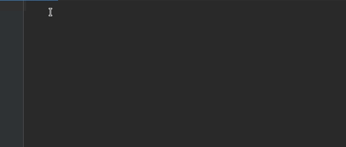

PartNLP Project¶
Overview¶
This documentation is all about PartNLP package. PartNLP designes to help developers to perprocessing their text automatically! Also it has many useful features that makes perprocessing more fun! However, This is not an exhaustive description but it should show you how use the package effortlessly.
Introduction¶
PartNLP is an integrated package uses many famous packages. Moreover, PartNLP supports multi languages. In the below table you can see all valid operations accomplishing by PartNLP and their corresponder packages.
Operations |
Keyword |
Packages |
|---|---|---|
normalize |
NORMALIZE |
HAZM, PARSIVAR |
sent tokenize |
S_TOKENIZE |
HAZM, PARSIVAR, STANZA |
word tokenize |
W_TOKENIZE |
HAZM, PARSIVAR, STANZA |
lemmatize |
LEMMATIZE |
HAZM, STANZA |
stem |
STEM |
HAZM, PARSIVAR, STANZA |
Features¶
This section provides a list of possible features supported by PartNLP. It able to:
Use GPU
Use multi thread
Use multi processors
Add custom stopwords
Separate files for using GPU
Remove specify range of characters
Remove digits and Non-Persian letters
Convert fnglish letters to persian letters
Installation¶
for installing, you can simpley use pip to install the package.
>>> pip install -i https://test.pypi.org/simple/PartNLP
Usage¶
In this section we are going to see the simple usage of PartNLP package.
